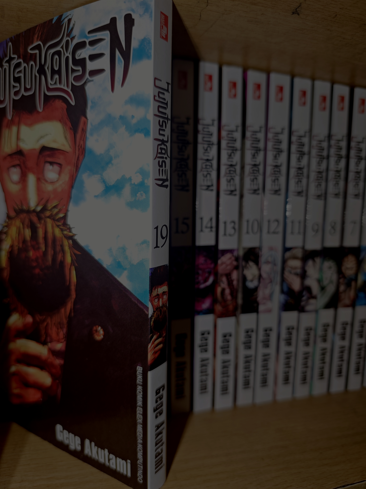
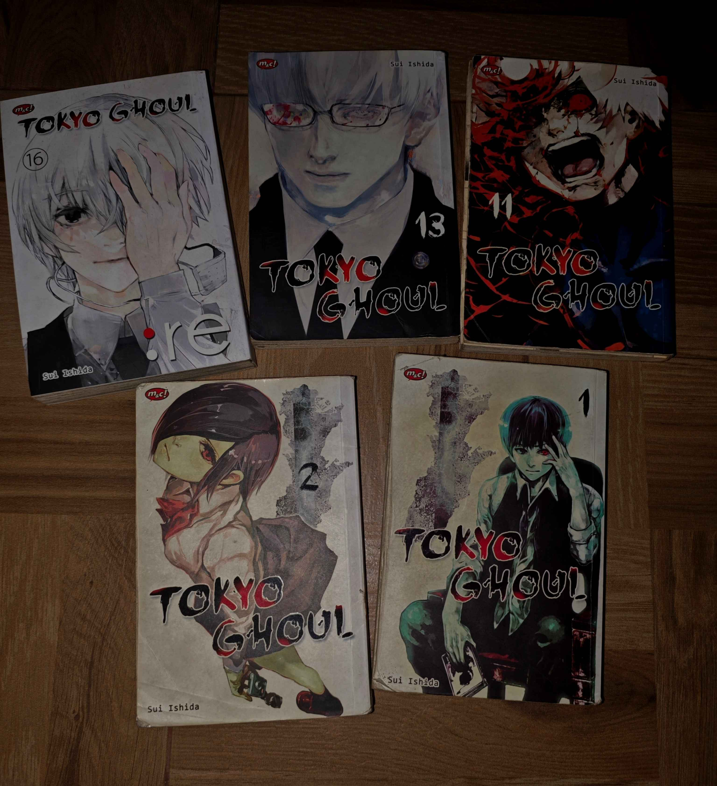
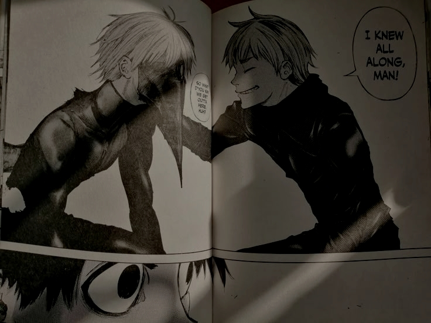
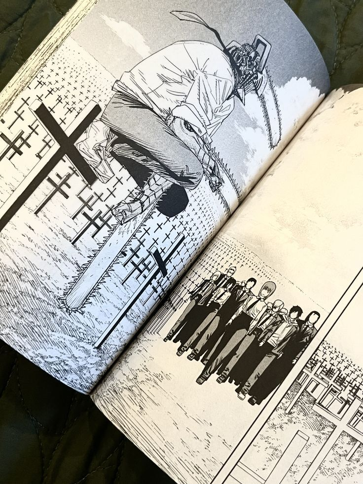
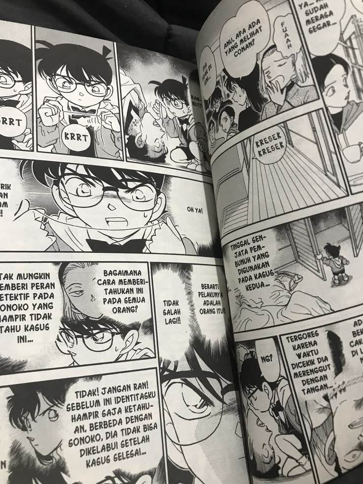

Web Satria
SMAN 8 YOGYAKARTADelayota
Rekomendasi Komik Seru Menurut Saya
Perkenalkan, nama saya Satria Kalingga Hadi Rustanto, nomor absen 31, dari kelas X E7 SMAN 8 Yogyakarta. Website ini dibuat sebagai salah satu tugas mata pelajaran Informatika, dengan tujuan untuk mempelajari dan menerapkan dasar-dasar pembuatan website menggunakan HTML, CSS, dan teknologi web lainnya. Pada website ini, saya akan membagikan beberapa rekomendasi komik yang menurut saya menarik dan seru untuk dibaca. Setiap komik memiliki cerita, karakter, dan keunikan tersendiri yang membuatnya layak untuk direkomendasikan. Semoga informasi yang saya sajikan dapat memberikan referensi dan menambah minat pembaca terhadap dunia komik. Selamat membaca dan semoga bermanfaat.
-
Naruto Shippuden karya Masashi Kishimoto.
Menceritakan perjalanan Naruto Uzumaki, ninja muda dari Konoha yang bercita-cita menjadi Hokage. Bersama Tim 7, ia menghadapi berbagai musuh dan berusaha membawa kembali sahabatnya, Sasuke. -
Tokyo Ghoul karya Sui Ishida.
Berkisah tentang Ken Kaneki yang berubah menjadi manusia setengah ghoul setelah kecelakaan. Ia harus bertahan hidup di tengah konflik antara manusia dan ghoul. -
Detective Conan karya Gosho Aoyama.
Mengisahkan Shinichi Kudo yang tubuhnya mengecil menjadi anak kecil dan memakai nama Conan Edogawa untuk memecahkan kasus sambil memburu organisasi kriminal misterius. -
Chainsaw Man karya Tatsuki Fujimoto.
Ceritanya mengikuti Denji, remaja miskin yang berubah menjadi manusia gergaji mesin setelah menyatu dengan iblis bernama Pochita dan kemudian menjadi pemburu iblis. -
Jujutsu Kaisen karya Gege Akutami.
Menceritakan seorang siswa SMA bernama Yuji Itadori yang memperoleh kekuatan kutukan setelah menelan jari milik Ryomen Sukuna. Ia kemudian bergabung dengan sekolah penyihir jujutsu untuk melawan roh-roh kutukan yang mengancam manusia.

Beberapa Tampilan Komik
Tampilan Komik dari rekomendasi-rekomendasi diatas

Tampilan Komik(2)




Tampilan Komik(3)

